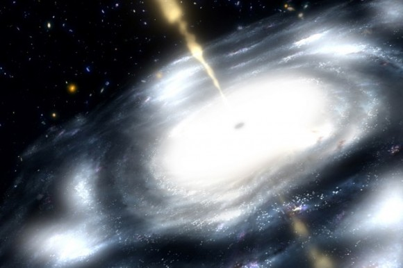

Formula-27: Resolving Singularity in Quantum-Relativity
Black hole / Quantum information paradox

Artist rendering of a supermassive black hole. Credit: NASA / JPL-Caltech.
{kind=link}
This paradox is a result from the combination of quantum mechanics and general relativity. The paradox suggests that physical information could permanently disappear in a black hole. This is a controversial because it violates the principle that complete information about a physical system at one point in time should determine its state at any other time. The evolution of the wave function is conserved in the quantum sense, which is the strictest form of determinism. In short, information must always be preserved.
In July 2004, Hawking published a paper presenting a theory that quantum perturbations of the event horizon could allow information to escape from a black hole, which would resolve the information paradox. An event horizon is a boundary in spacetime beyond which events cannot affect an outside observer: it is “the point of no return’ i.e., the point at which the gravitational pull becomes so great as t make escape impossible. A black hole is surrounded by an event horizon.
The central feature of a black hole is its event horizon. The event horizon of a black hole is basically the point of no return when approaching a black hole. In Einstein’s theory of general relativity, the event horizon is where space and time are so warped by gravity that you can never escape. Cross the event horizon and you are forever trapped.
This one-way nature of an event horizon has long been a challenge to understanding gravitational physics. For example, a black hole event horizon would seem to violate the laws of thermodynamics. One of the principles of thermodynamics is that nothing should have a temperature of absolute zero. Even very cold things radiate a little heat, but if a black hole traps light then it doesn’t give off any heat. So a black hole would have a temperature of zero, which shouldn’t be possible.
Stephen Hawking received widespread mainstream media coverage in January 2014 with an informal proposal to replace the event horizon of a black hole with an “apparent horizon” where infalling matter is suspended and then released; however, some scientists have expressed confusion about what precisely is being proposed and how the proposal would solve the paradox.
On January 22nd, where he bluntly stated that black holes, in the sense of being objects that can trap light and everything else indefinitely, are no more. Thus, either quantum physics or general relativity must go. And that’s a big deal.
THESE PARADOXES (if any) WILL BE EXAMINED FROM THE MIND-BEING POINTS OF VIEW
On the concepts of Information, there is night-day difference between the Mind-Being Paradigm and Quantum-Relativistic Physics.
(1) The Mind-Being Paradigm treat Information from the points of view of Observer—Observed—Reference Frame; rather than from the interactions between event horizon and the black hole.
(2) There are no such concepts of black hole and event horizon in Mind-Being Paradigm.
(3) In connections to these issues, the Mind-Being Paradigm needs to understand the transition amongst the Logic-Information—Information-Energy—Energy-Mass Universes.
MIND-BEING PARADIGM ON INFORMATION: A REVIEW
- Logic Encoded onto GOD’s Vacuum Computer in forming the Logic-Information Universe: GOD’s Input formed the Logic Big Bang
- Computer Execution of these sets of Logic formed the Information-Energy Universe; thus Sets of Quantum Objects are continuously generated forming the Physical Big Bang
- Subsets are continuously outputted forming the Energy-Mass Universe of Classical Objects
QUESTIONS, Similar to those addressed in the Quantum-Relativistic Paradox
- Is the Computer equivalent to a Black Hole?
- How does Information-Energy returns back to the state of Logic-Information?
- Is there any lost of Information in this return?
- Is this equivalent to a Return to GOD?
- What is the Return Path from Energy-Mass Universe to Information-Energy Universe and finally back to Logic-Information?
Thus, there are no Event Horizon nor Black Hole in the Mind-Being Paradigm; yet there is still the problem on how Information-Energy Universe return back to the Logic-Information Universe. On the other hand, Logic-Information onto Information-Energy is through Informational collapses.
The solutions to these questions are in understanding the Conversion between Unseen Truth (inside the Logic-Information Universe) and the Visible Truth (inside the Information-Energy Universe). Vice versa, how does Visible Truth Converted back to Unseen Truth.
To understand these conversions, fully understanding the following three Mappings are important.
- (1) Information <—-> Knowingness <—-> Spirit-Mind Maturity
- (2) Sensing / Feeling <—-> Soul-Mind Maturity
- (3) Knowledge <—-> Experimenting with Being-In-Matter
It is this Holon that control the interchange of Visible to Unseen and vice versa. This Holon has to do with the maturity of the Observer, which is difference than the cast of the Quantum-Relativistic Paradox. In the latter, it is the Observed that cause the Paradox; namely it is the Physical Events.
METACUBE, THE BEGINNING OF VISIBLE AND UNSEEN TRUTH
{kind=link}
Lets start with the Metacube that forms the tetraktys. The dynamics of Formula-27 are hidden in the in the Involution of the hidden truth and the Evolution of visible truth, in created The TRUTH. From the formation of the Metacube’s “mental” Holon to its involution-evolution dynamics of Formula-27 is shown below.
{kind=link}
THE TETRAKTYS —-> GEOMETRY OF THE COSMIC MIND; THE ICOSAHEDRON AND DODECAHEDRON JOINED INTERNALLY TO FORM AN OCTAHEDRON INSIDE THE TETRAKTYS
The Octahedron symbolize Matter; while Icosahedron denotes the Mind.
{kind=link}
Could the Tetraktys (formed by the Metacube) be responsible for the teleportations of Information between the Logic-Universe and the information-Universe, as illustrated below?
{kind=link}
The “Informational slide” at the middle is a quantum-relativistic mirror. It is a Non-Local / Non-Physical Mirror. A Teleportation Mirror for Time as the Moment of NOW and for the imaginary number i. Time (—> the Moment of NOW), is non-locally connected to space-energy and logic across the Virtue Mirror. On the other hand, we have the Imaginary number i forms the Quantum connection between the real x–y–z axis in the side of energy and the imaginary Yin–Yang–Neutral axis in the side of Information. Here, information is not a physical booking entity. Information within this Mind-Being Paradigm has to do with understanding—knowing—modifying both the Observer-Observed Information and creating the Logic encoded inside the Vacuum Computer.
Related back to Quantum-Relativity, the former generated the singularity Event Horizon problem in general relativity. The latter created the black hole problem in quantum physics.
Both of these problems do not exist in Mind-Being Paradigm. The problem with the Paradigm is in understanding the non-physical operations of this Mirror. It is this non-local imaginary mirror that resolved the difficulties of converting the Visible to Unseen Truth and Vice versa. Space and Time connects non-locally only at the Points of NOW. The connection for Quantum is only through the imaginary axis of Yin–Yang–Neutral. Notice, the Tetraktys were not used in this discussion. Only the non-local and non-physical Informational Mirror were used. The Tetraktys is only a transportation medium. These Paradoxes were resolved by the Mind-Being Holon of NOW—-MIRROR—-Imaginary Number-i.
Another property of the teleportation is that the two free-weill / intention Holons assigned to the Metacube, which are doing the execution between Energy and Logic via Information. These two Holon are shown above and with their Chinese characters shown below.
{kind=link}
Therefore, the entire operation of the Mirror Slide is Virtual. Thus the transformations between Energy into Logic via Information and vice versa is in executing the Mind—Soul—Spirit of the Observer-Observed Holon of Now, through Non-Physical / Imaginary Coordinates across a Virtual-Mirror.
The problems with the Paradigm, related to these matters, have to do with understanding the notion of Maturity; rather than singularity and destruction of Information. Maturity in the sense of Ascension, in understanding the Holon of [Sensing Ancient Knowingness]—-[Understanding Modern Knowledge]—-[Feeling the coming Post-Modern Logic]. That is in understanding the following set of Holon Mapping.
- Information <—-> Knowingness <—-> Spirit-Mind Maturity
- Sensing / Feeling <—-> Soul-Mind Maturity
- Knowledge <—-> Experimenting with Being-In-Matter
Also, how can one understands #37—-#37—-#64:
- How 27 fits into the Metacube
- How 37 fits into the Metacube
- How do we know that the Metacube is full
- If the Size of the Metacube increaes, does the ball ration the same 27/37 —> 137
Problems involve with the Vacuum Computer:
- How do Logic Encoded
- Computer’s Operating System
- Virus Protection
- Fire Wall
LASTLY, IN LIGHT OF MIND-MIND PARADIGM: There are no entanglement problems because entanglement is Not needed to explain non-locality. Non-locality exist because there are no space and no time. Space is defined as a separation of the nucleus and its electron orbits. Time is Moment of NOW operator. Thus, in the Paradigm, there is no Entangled Information. Thus, there is no need to solve the Black Hole / Entangled Information (The Fire Wall Problem) in Hawking Radiation. However, one needs to understand the Fire Wall for the Vacuum Computer. That is, we need to understand how to Reverse Engineering God’s Inputs.
FORMULA-27 IN SUMMARY
{kind=link}
THE ABOVE IS TOE FOR HUMAN KNOWLEDGE —- Babylonia, Greek, Hebrew, Christian, Jews, and Chinese —- and within these 5 Postings applied to Elementary Particles, Quantum-Relativity, and Strings
AND FINALLY, COMPLETING TOE JUST FOR PHYSICS, FORMULA-27 COMBINED WITH THE FOLLOWING PRELIMINARY POSTINGS IN 2009 WOULD FORM A COMPLETE PACKAGE
- Physical Constants Generated by φ (Phi)
- QA: 11 Unanswered Questions in Physics
- QA: what is graviton—free-will—photon
- QA: How Light Constant derives other Physical Constants
This completes the Mind-Being Paradigm Postings. All total, there are 202 Posting since 2009. 190 of them are already Posted. The remaining 12 are not yet Posted, which have to do with the Inputs—-Execution Programs—-Outputs of the WebHealth Computer.